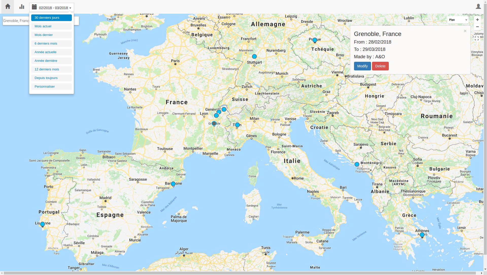

Mapp - Angular JS Webapp
Je voyage beaucoup et aime garder une trace de ce que je fais. J'aime aussi avoir des métriques et statistiques sur tout ce que j'entreprend. J'ai cherché une application, un site web proposant de stocker ses voyages et je n'ai pas trouvé.
J'ai donc commencé un projet autour de celà. Pourvoir ajouter des points sur une carte, les relier. Dans le futur, je voudrais pouvoir ajouter des commentaires sur les étapes, des photos, indiquer avec qui, afin d'avoir des filtres et pouvoir sélectionner ce que l'on souhaite afficher. Puis si cela est stable et intéresse du monde, l'ouvrir à tout le monde.
J'ai utilisé Angular JS car je ne connaissait pas la technologie et voulais apprendre. Cela m'a permis d'apprendre un langage mais surtout une logique de programmation, et avoir un regard critique sur celui-ci aussi, pour comparer à d'autres solution.
Ce projet est loin d'être terminé et me permet d'apprendre de nouvelles technologies sur mon temps libre.